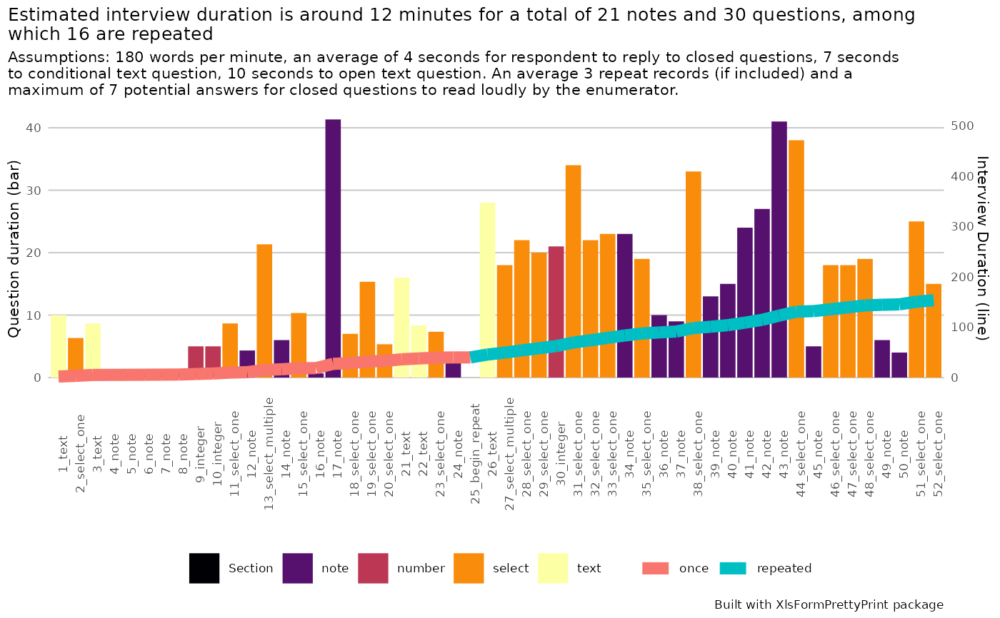

Prepare a summary estimation of the interview duration.
Source:R/interview_duration.R
interview_duration.RdWhen designing a questionnaire, it is key to keep the interview duration under control. Typically less than 20 minutes for a phone interview and less than 40 minutes for a face to face interview.
The function is designed to provide a rough estimate (aka a guesstimate...) of the interview duration in order to assess this element of questionnaire design quality. If the questionnaire takes too long, then one needs to trim it or split it into multiple ones...
The estimations provided in that function are based on a series of assumptions and accounts for the following elements:
the time needed to read the label of the questions - or the note - Questions hint are not accounted for as they tips for enumerator and not to be read to respondent
the time needed to read the question modalities - as there's nothing in xlsform that tells whether the enumerator is expected to read loudly the potential answers in case of closed question, the function has a parameter to
the time need to answer the question - here we are accounting for 3 distinct situations, each of them with a different potential duration: - close questions - open questions and open questions set up under skip logic so typically - the "if other, specify" - each comes with distinct response time
the time needed when we have a "repeat" block - typically questions repeated for a family roster -
Usage
interview_duration(
xlsformpath,
label_language = NULL,
wpm = 180,
maxmodalities = 7,
resptimeclose = 4,
resptimecondopen = 7,
resptimeopen = 10,
avrgrepeat = 3
)Arguments
- xlsformpath
path to the file with xlsform
- label_language
Language to be used in case you have more than one. If not specified, the 'default_language' in the 'settings' worksheet is used. If that is not specified and more than one language is in the XlsForm, the language that comes first within column order will be used.
- wpm
word per minute - an average 180 word per minute (per default) required to read loudly the text
- maxmodalities
if more than 7 potential answers for a select question (per default)- then we assume that those modalities will not be read by the enumerator - but rather selected based on an open answer - and not be accounted for the modalities duration estimation
- resptimeclose
an average 4 seconds (per default) for respondent to reply for closed questions
- resptimecondopen
an average of 7 seconds (per default) to reply to conditional text question (accounting for question type of "other, please specify").
- resptimeopen
an average of 10 seconds (per default) to reply to open text question.
- avrgrepeat
In case of repeat questions, an average 3 repeat (per default) is accounted for.
Examples
## Generate the summary chart
interview_duration( xlsformpath = system.file("demo.xlsx", package = "XlsFormPrettyPrint"), label_language = NULL )
#> Loading required package: ggplot2
